Hadoop is a distributed data processing platform/framework written in Java that utilizes a large cluster of computers(hardware) to maintain and store big size data.
Hadoop was designed and developed in layers. The core platform layer offered three capabilities:
YARN: Cluster Resource Manager
HDFS: Distributed Storage
Map/Reduce: Distributed Computing
We have already studied that Hadoop Architecture mainly consists of 3 components. Lets read about them one by one.
YARN:
YARN stands for Yet Another Resource Negotiator also known as Hadoop cluster Operating System but Hadoop creator prefer to name it as a Cluster Resource Manager.
Hadoop was developed as an operating system of a distributed cluster. For a cluster of computers, we need a cluster operating system. Cluster operating system allows us to use the cluster resources such as CPU, Memory, and disk which are spread across the computers. We are not using a single computer where everything is available on a single machine. A cluster is a group of computers. Cluster Operating System makes it work like a single large computer. It allowed us to use a cluster of computers as a single large computer. So, Yarn is Distributed cluster formation or Cluster Operating System.
Simply, YARN is a resource manager layer in the Apache Hadoop ecosystem, responsible for managing resource and scheduling jobs (applications) on a Hadoop cluster.
Hadoop's YARN has three main components:
RM - Resource Manager
NM - Node Manager
AM - Application Master
Lets assume we have 5 computers, we want to make a Hadoop cluster using these computers. So we will install the Hadoop on these computers and configure them to make a Hadoop cluster. Installing and configure Hadoop is as simple as installing a software in our computers.
Hadoop uses a master-slave architecture. So one of these machines will become the master, and the remaining will act as the worker node.
Configuring Hadoop will also install a YARN resource manager service on the master. It also installs a node manger service on all the worker nodes.
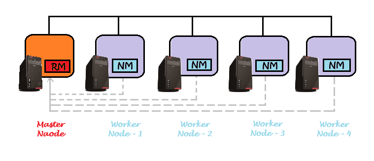
We have 5 node cluster. One node acts as a master and runs the YARN resource manager service. The other four nodes act as a Worker and run a node manager service.
The node manager will regularly send the node status report to the resource manager.
To run a data processing application, User will submit a application to the YARN resource manager using a command line submit tool.
Now the resource manager should run this application on this cluster. So, the resource manager will request one of the node managers to start a resource container and run an AM (application master) in the container. Thats all, your application starts running inside the Application Master container.
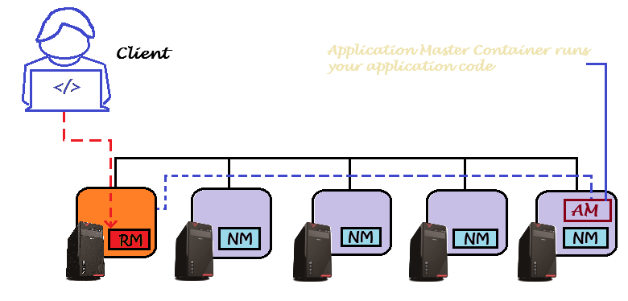
Container is a set of resources that includes memory and CPU. For example, a YARN container may be a set of 2 CPU cores and 4 GB of Memory. So, wherever we refer to YARN Container, you should think of a box of some CPU and Memory.
Highlights to YARN
-- We submit our application to the Resource Manager.
-- The resource manager requests the node manager for allocating an application master container and starting your application inside the AM container.
-- Your application runs inside the AM container.
-- Lets assume we submit another application. The RM will again repeat the same process. It will ask another NM to allocate a new AM container and start this new application inside the AM conatiner.
-- Each application on YARN runs inside a different AM container.
-- If you have 10 applications running in parallel, you will see 10 AM containers on your Hadoop cluster.
HDFS:
HDFS stands for Hadoop Distributed File System. It allows us to store data and retrieve data files in Hadoop cluster. The data is internally distributed on the hard disks on the cluster. However, Hadoop offered us a distrbuted storage system and allowed us to save and read the data file as we do it on a single machine.
HDFS has two main components:
NN - Name Node
DN - Data Node
Let's assume we have five computers shown below in which Hadoop is already installed and form a Hadoop cluster.
Hadoop will install the Name Node service on the master and each worker node runs a data node service.
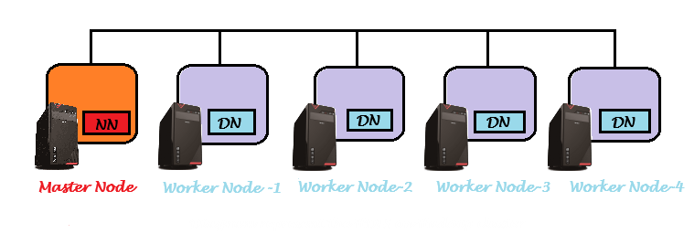
The name node with the data node service forms the HDFS. The primary purpose of the HDFS is to allow us to save files on this Hadoop cluster and read them whenever required.
Let's assume you want to copy a large data file on your Hadoop cluster. So you will initiate the file copy command. The file copy request will go to the name node.
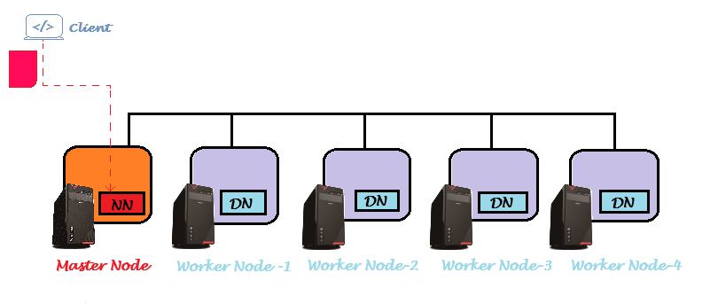
The name node will redirect the file Copy command to one or more data nodes. Let's assume you get redirection for three data nodes.
The file copy command will split the file into smaller parts and write those parts on the three data nodes.
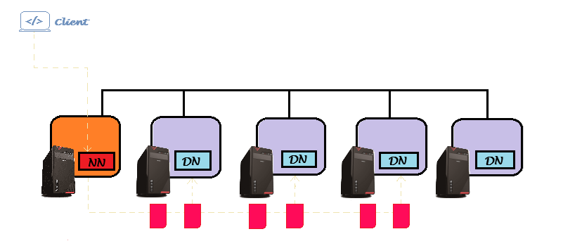
The file copy command will break your file into smaller parts. Each part is known as a block. The typical block size is 128 MB. Now the file copy command will write some blocks to data node 1, some other blocks will go to data node 2, and the remaining ones will go and sit at data node 3.
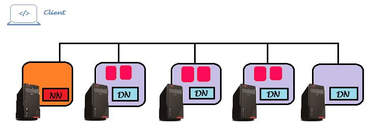
So your date file data will break into blocks, and Hadoop will distribute these blocks on the data nodes. The name node facilitates this process and keeps track of all the file metadata.
What is the file metadata?
File Name - What is the file name?
Directory Location - In which directory did you create the file?
File Size - What is the total size of the file?
File Blocks - How the HDFS breaks the file into blocks, and how many blocks are there?
Block ID - What is the block id for each block?
Block Sequence - What is the sequence of the blocks?
Block Location - Where can we find the block? Meaning the list of the block IDs stored at each data node.
Point is straight - The file is broken and spared on the data nodes. And all the information required to reassemble the file is kept at the name node.
Now let's come back to the read operation.
The request goes to the name node.
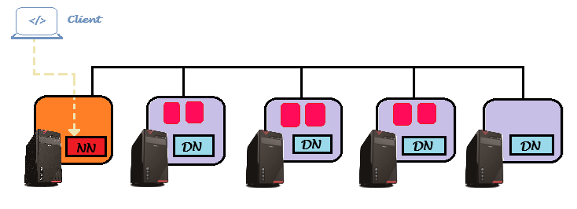
The name node owns all the information for reassembling the file from the blocks stored at the data node.
So the name node will redirect the read operation to the target data nodes.
The read API will receive data blocks from the data node.
And reassemble the file using the metadata provided by the name node.
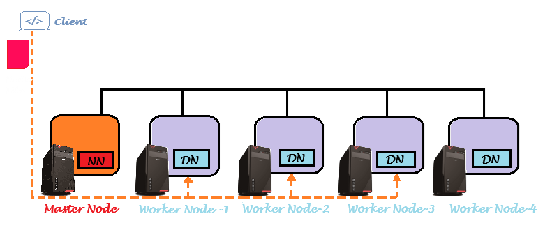
Map/Reduce:
Map Reduce is
Programming Model
Programming Framework
Map Reduce is a programming model and framework used for processing large data sets in parallel across a cluster of computers.
What is Programming Model?
A programming model is a technique or a way of solving problems.
Let's try focusing on the map-reduce programming model with an example:
You have a CSV file of 20 TB size.
Here is a pseudo-code of the program to count the number of lines in the file.
open file as f_hd: for each t_line in f_hd.get_line(): n_count = n_count + 1 close f_hd print n_count
Open the file, then loop through each line in the file. Every time you read a line, you can increment a counter. You will come out of the loop on reaching the end of the file. Now you can close the file and then print the count.
You got the line count of the file.
But we have a small problem. The file size is 20 TB. Can you find a machine to store a 20 TB file and run your line count program on this file?
It is hard to find such machines. Even if you find a high-end server machine, your program will take hours or days to count the lines.
So we have two problems here.
Storage capacity problem
Processing time problem
Hadoop offered to solution to both problems. You can use the Hadoop cluster to store the file.
Let's assume you have a 21 node Hadoop cluster. One node becomes the master, and the other 20 nodes are the workers. Each node comes with four hard disks of 2 TB. So single node storage capacity is 8 TB. However, the overall Hadoop cluster storage capacity is 160 TB.
Each node also comes with four dual-core CPUs and 64 GB of memory. So the total cluster capacity is 160 CPU Cores and 1280 GB of memory.
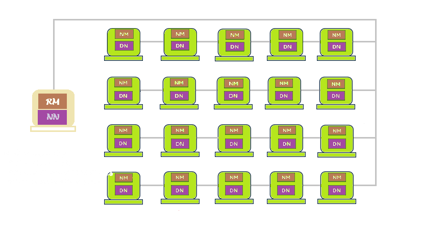
You can use HDFS to copy your 20 TB file on this cluster. HDFS will break the file into small 128 MB blocks and spread them across the cluster. So some data nodes will store data blocks and all togeather they can easily store your 20 TB file.
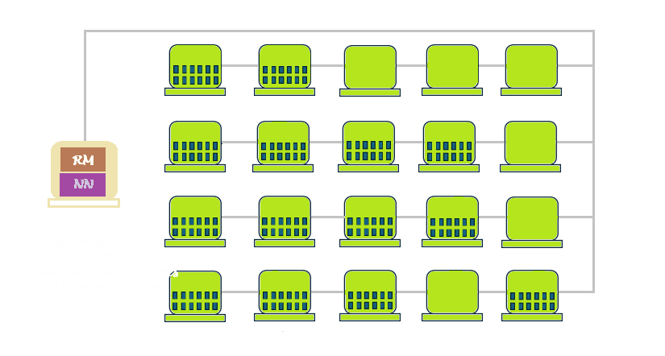
So Storage problem is taken care by Hadoop cluster. If you need more storage, you can increase the cluster size and add more computers.
Now, what about the processing time problem??? Thats where the Map Reduce model comes into picture.
Let's write the count line logic once again
def map(file_block):
open file_block as fb_hd
for each t_line in fb_hd.get_line():
n_count = n_count + 1
close fb_hd
return n_count
def reduce(list_counts):
for each cnt in list_counts:
total_count = total_count + cnt
print total_count
We have broken the logic into 2 parts, first part is known as map function and the second part is known as reduce function.
Old logic was opening the file and count the lines but in new logic we have map function (almost same as old) but it opens the file block and counts the line instead file as in old.
Let's see how we can achieve this.
We run the map function on all the data nodes in parallel.
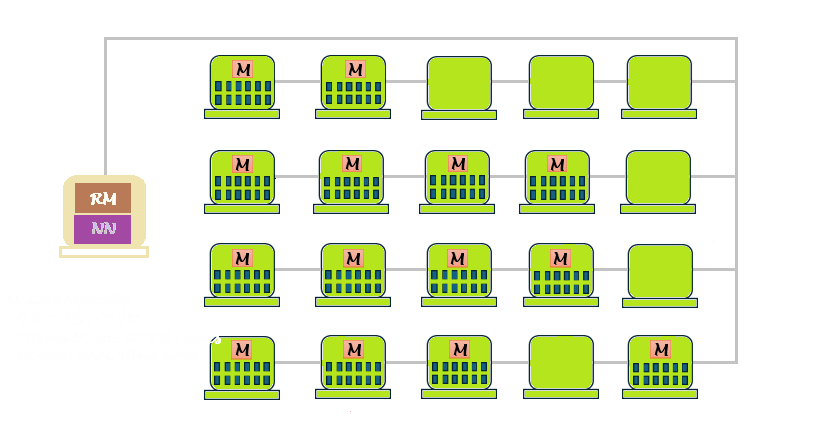
This map() will open each block on the data node and count the lines. End of the execution, we can have the number of lines in blocks at the given data node.
So basically with use of this function we can count the lines of 14 data nodes in parallel. Everything will run at the same time and will get the line counts in 1/14th of the time compared to doing it on a single machine.
However we have 14 line counts, each count represents the number of lines on their respective data nodes.
Now we can start a reduce() at one node.
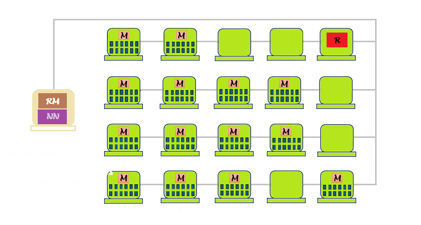
All the data nodes will send their counts to the reduce function. The reduce() will receive 14 line counts in an array. So, we can loop through the array and can sum of all the counts. This is the logic of the reduce function.
In short, Map/Reduce is a programming model to break your application logic into 2 parts:
map() - where we can do the parallel calculation/processing.
Reduce() - we can do the summation or other type of aggregation and consolidation.
This was just an example for line count but hadoop can do every type of data processing work. Hadoop offered HIve database as an additional component. Hive allows you to write SQL expressions. However, the Hive SQL engine translates all your SQL expressions into Map Reduce programs.
However, now we do not use the raw Map-reduce on Hadoop. We use high-level solutions such as Hive SQL, Spark SQL, Spark Scripting, etc., and develop data processing applications. We do not go down to the Map-reduce level.
What is Map/Reduce Programming Framework
The Map/Reduce Program we have written needs to be submit to hadoop cluster so user will submit the prog to YARN. The YARN resource manager is responsible for running the program. So the YARN resource manager will request one node manager to start a YARN resource container and run the program in the container. This first container is known as Application Master Container.
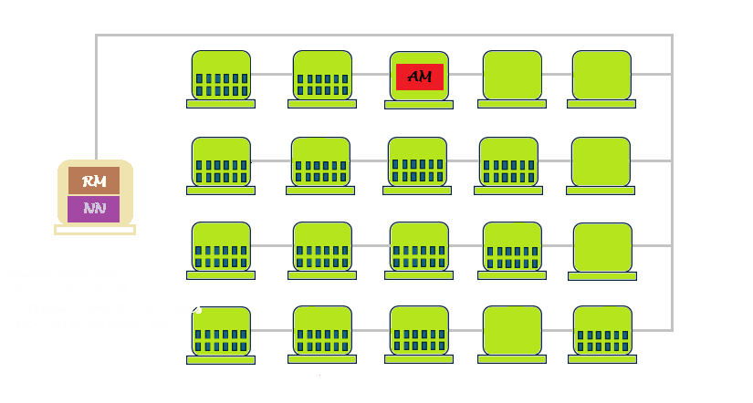
Now the program is running in the container. But the program is a Hadoop map-reduce program. And these functions using Hadoop Map Reduce Framework API. So running the program will trigger the Hadoop Map-Reduce Framework. And the M/R framework will take control of my program.
Now, the M/R framework will again request the resource manager to start 14 more containers and run the map function in those containers. The resource manager will pass on the request to node managers, and they will start 14 new containers. So now one new container is running on 14 workers. And these new containers will run the map function.
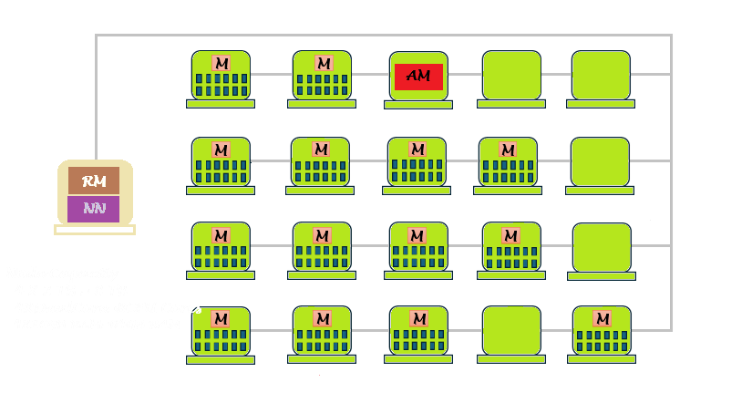
The Hadoop Map Reduce framework does that for us. We only write a map() function and implement the logic inside it. But when we run our program, the Hadoop M/R framework will take control and work with the YARN resource manager to execute the map function on all the data nodes.
The M/R framework will not stop there. It will wait for all the map functions to be complete. Then it will collect the block counts from all the map methods, pack those values into an array, and then start the reduce method on a single node.
Simple, The M/R framework will start the map methods and wait for completion. Once completed, it will collect the output from all the map methods. Then, it goes back to the resource manager and requests a new container to run the reduce function. The RM will coordinate with the node manager to give one more container and start the reduce function. The Reduce function needs the output of all the map functions. The M/R framework will facilitate the output of map functions to the Reduce function. The reduce function will sum up the counts and print them.
When you install Hadoop on a cluster of machines, a set of key services or components come into play to enable distributed storage and processing of large datasets. Here's an overview of these core services:
HDFS (Hadoop Distributed File System)
Purpose: A distributed file system that stores data across the cluster.
Key Components
NameNode: Manages the metadata of the file system (e.g., file locations, permissions).
DataNode: Handles the actual storage of data blocks and communicates with the NameNode.
YARN (Yet Another Resource Negotiator):
Purpose: Manages cluster resources (CPU, memory) and schedules tasks for processing.
Key Components
ResourceManager: Allocates resources to applications.
NodeManager: Monitors resources on individual nodes in the cluster.
MapReduce:
Purpose: The Map-reduce is a programming technique or a programming model.
Key Components
MapFunction:reads data blocks and applies them to process logic at the block level. Map output is sent to Reduce.
ReduceFunction: Receives Map output from all the map functions and consolidates the result.
MapReduce Framework: It implement the map-reduce model.
All three components of Hadoop work together. The YARN, the HDFS, and the M/R framework work together to help you run parallel copies of the map function. And one copy of Reduce function for result consolidation.